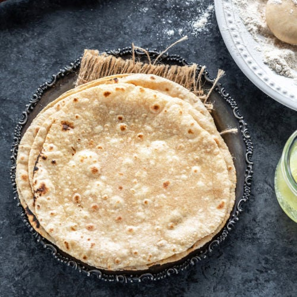

Roti
A staple of any indian meal.

Roti is a round flatbread native to the Indian subcontinent.
It is made from whole weat flour, and is a integral part of Indian cuisine.
Ingredients:
- Whole weat flour
- Water
- Salt
Recipe Instructions:
- Combine salt flour and water to make a soft dough.
- Make the dough into medium sized balls.
- Flatten the balls using a roller.
- Put the flattened dough onto a tava until fully cooked on both sides.
Return to main page